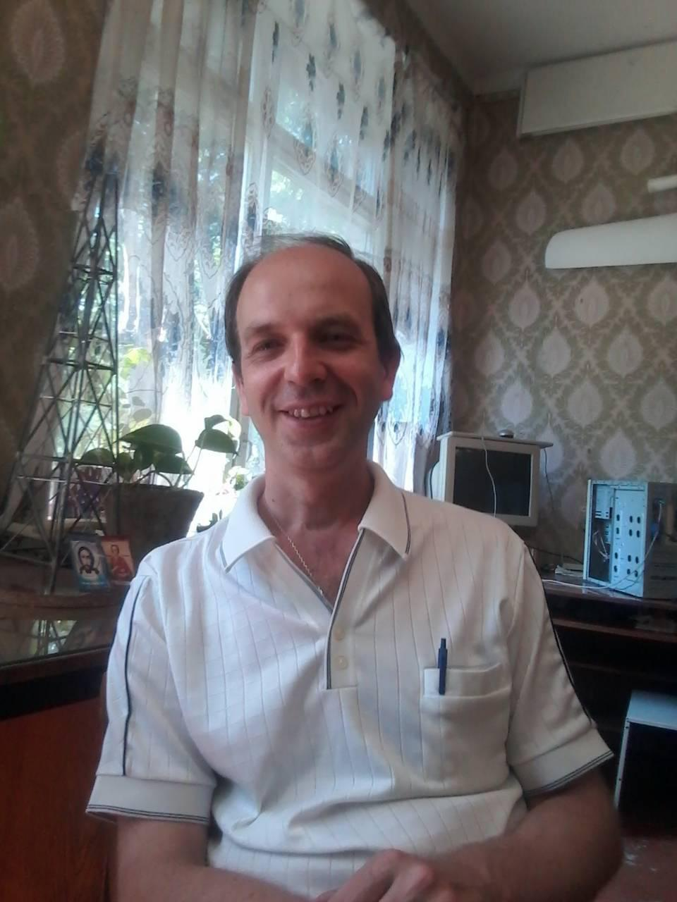

Alexander Ivanchenko
Junior Front-End Developer
Contacts
- Dnipro, Ukraine
- E-mail: IvanchenkoAV@ukr.net
- Discord: Alexander Ivanchenko#6953
- Site: https://tangerine-cajeta-eb961d.netlify.app/
- Github: AlexanderVI46
- LinkedIn: alexander-ivanchenko-691502163
- HackerRank: IvanchenkoAV
- CodeWars: Alexander_V_I
- ORCID: IvanchenkoAV
Summary
Personal and business qualities: desire to work and develop, result-oriented, punctuality, responsibility, attentiveness, decency, purposefulness. Hobbies: philosophy, walking, automotive technology.
Author and co-author of more than 100 scientific and educational works, including textbook, study guide, four monographs, patent for an invention and five utility models, a specialist in programming, mathematics, in particular numerical methods, statistics, physics, electronics, and also in the field of modeling physical processes.
Skills
- Python (177 completed tasks on CodeWars and HackerRank), Assembler, HTML, CSS, SQL, Git, Figma, Turbo Pascal, Delphi, Visual Basic, Fortran, Access, Matlab, Mathcad, Excel (see Co-author of educational and methodological works)
- 20 years of experience in teaching computer disciplines
- Simulation of physical processes (25 years) with implementation in different programming languages and using math software (see articles from List of some publications)
- 15 years of experience of technical support of computers, the Internet and local computer network (including the hardware and software)
- Excellent written English (see articles from List of some publications)
Code
import numpy as np
from sklearn.linear_model import LinearRegression
x = np.array([2, 10, 15, 35, 42, 52]).reshape((-1, 1))
y = np.array([3, 18, 16, 30, 27, 42])
model = LinearRegression().fit(x, y)
print('b0=', model.intercept_)
print('b1=', model.coef_[0])
r_sq = model.score(x, y)
print('coefficient of determination:', r_sq)Certificates
- 2022.04 - Campster basics of Python programming
- 2022.04 - Training course on the program "Modern information technologies in the educational process of higher education" for scientific and pedagogical and pedagogical workers of Oles Honchar Dnipro National University
- 2022.04 - Training course on the program "Professional activity in higher education: methods, art, skill" for scientific and pedagogical and pedagogical workers of Oles Honchar Dnipro National University
- 2022.05 - Internship at Department of Information Technology and Computer Engineering of National Technical University "Dnipro Polytechnic"
Projects
Education
- 2016 Academic title Associate Professor of Department of Radioelectronics
- 2013 Academic degree Ph.D. (physics and mathematics)
- 1998 – 2001 Post graduate course at Department of Radioelectronics, Faculty of Radiophysics, Oles Honchar Dnipropetrovsk National University
- 1993-1998 - Graduate course (diploma with honors) at Faculty of Radiophysics of Dnepropetrovsk State University
- 2022.05 - Internship at Department of Information Technology and Computer Engineering of National Technical University "Dnipro Polytechnic"
Languages
Ukrainian – Native
Russian – Native
English – Intermediate